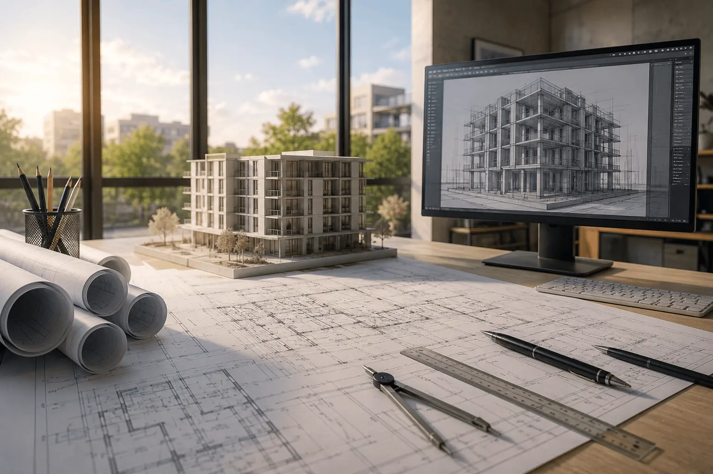
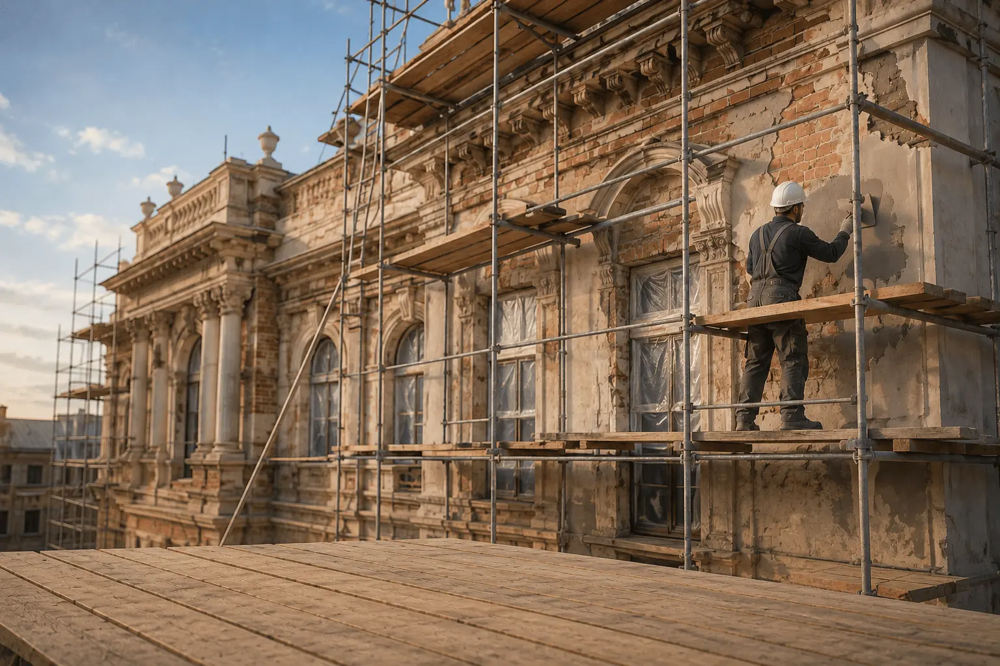

Услуги
Генеральный подряд
Наша компания организует работу субподрядных организаций, контролирует качество материалов и соблюдение технологий, обеспечивает соблюдение графика и бюджета строительства. Мы несём полную ответственность за конечный результат, что подтверждено многолетним опытом и портфолио реализованных объектов.
Проектирование
Наши инженеры и архитекторы разрабатывают все разделы проекта: от архитектурной концепции до инженерных сетей и благоустройства территории. Мы используем технологии информационного моделирования (BIM), что позволяет увидеть объект в 3D ещё до начала строительства и избежать коллизий на площадке.

Реставрация построек
Наши специалисты имеют опыт реставрации объектов культурного наследия. Мы проводим детальное обследование, подбираем аутентичные материалы и технологии, согласовываем документацию с надзорными органами. Итог - здание живёт новой жизнью, не теряя связи с эпохой.

Качество - залог успеха
Контроль на каждом этапе - основа нашей работы. Все материалы проходят входной контроль, скрытые работы фиксируются, а отклонения от проекта недопустимы без согласования.
Мы фиксируем сроки в договоре и несём за них финансовую ответственность. Календарный график становится вашим инструментом планирования, а не формальным документом.
В штате компании - аттестованные инженеры, производители работ с опытом от 7 лет и собственные бригады по основным видам работ, каждый из наших работников подходит ответственно к любой задаче.